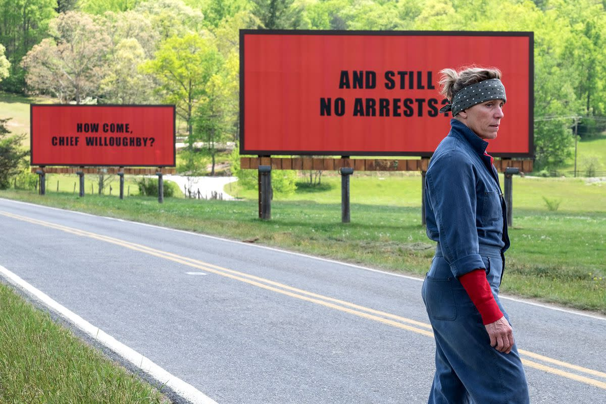

The third film by director, writer, and producer Martin McDonagh, the film follows Mildred Hayes, a mother who is angry with the police department for how they handled the death and rape of her daughter. She rents three billboards and puts up signs saying “RAPED WHILE DYING”, “AND STILL NO ARRESTS?” , “HOW COME, CHIEF WILLOUGHBY?” While the film has come under some fire for it’s treatment of race, it still is well made film that features a redemption arc for racist cop Dixon. The film is also nominated for Best Actress, two Best Supporting Actor nominations, Best Original Screenplay, Best Film Editing, and Best Original Score. 
Back